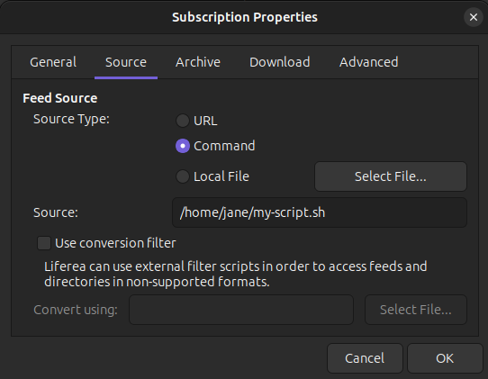
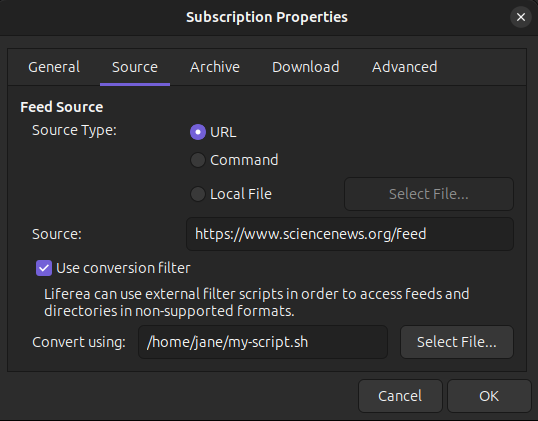

Website Scraping
Not every interesting website provides a feed. And some websites do provide summaries only or no content at all. Besides asking the owner of the website to add a feed or provide more details the only choice left is to “scrape” the website content.
Liferea provides two ways to do website scraping:
-
By running a Unix command (usually some script witten in your favourite scripting language) which writes a feed to stdout.

-
By applying a postprocessing filter after downloading some web resource. This way it is possible to augment an existing feed or extract contents from a HTML page. The resulting feeds needs to be printed to stdout.

The difference of both approaches is that when using a Unix command the script or command can save its state and retrieve multiple source documents, which is not possible with a post-processing filter. The advantage when using a post-processing filter is that you do not need to retrieve the source document because Liferea will download it and pass it on stdin.
Scraping Script Repository
To easily find a good scraping solution check out the rss-scraping repository which provides examples to write your own scraper, links to existing scraping scripts and useful existing scraping services.